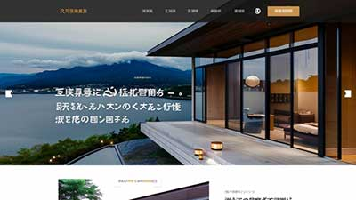

展示我們的網站設計與數位專案。

這是 Demo 01 的簡短描述。展示了網頁設計與開發的精選作品。
這是 Demo 02 的簡短描述。展示了網頁設計與開發的精選作品。
這是 Demo 03 的簡短描述。展示了網頁設計與開發的精選作品。
這是 Demo 04 的簡短描述。展示了網頁設計與開發的精選作品。
這是 Demo 05 的簡短描述。展示了網頁設計與開發的精選作品。
這是 Demo 06 的簡短描述。展示了網頁設計與開發的精選作品。
這是 Demo 07 的簡短描述。展示了網頁設計與開發的精選作品。
這是 Demo 08 的簡短描述。展示了網頁設計與開發的精選作品。
這是 Demo 09 的簡短描述。展示了網頁設計與開發的精選作品。
這是 Demo 10 的簡短描述。展示了網頁設計與開發的精選作品。
這是 Demo 11 的簡短描述。展示了網頁設計與開發的精選作品。
這是 Demo 12 的簡短描述。展示了網頁設計與開發的精選作品。
這裡的區塊可以在 html 下方的 <div id="menubar"> 中編輯。 請注意，這與 Header 的選單是不同的區塊。